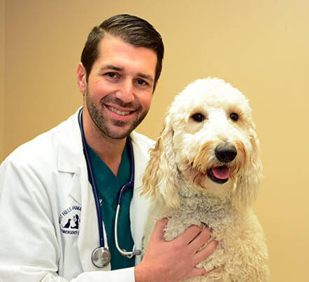

We are operating this clinic consisting 2 Veterinarian Doctors.

Dr.Smith
Resume
Veterinarian with 4+ years of experience in different clinics. Working researches about unusual illnesses. Very social personality. Technology adapted researching. Aiming to provide outdoor animals a safer world to live in.
Education
New York University (NYU) School of Veterinary Medicine
Bachelor of Veterinary Medicine | Graduated - June 2014
Hobbies
Great fan of tennis and table-tennis. A great collector of classical music records. Highly experienced in basketball.
7+ years of experience in many kinds of animals' surgeons. Motivated veterinarian with a proven track record of successfull surgeons and extraordinary achievements. Well developed leadership/communication skills, excellent time management skills and great teamwork abilities.
Education
University of Cambridge School of Veterinary Science
Bachelor of Veterinary Science | Graduated - June 2010
Hobbies
A great chess player. A known mountain-climber. Special interest against fishes. Fan of ice-skating and skating.